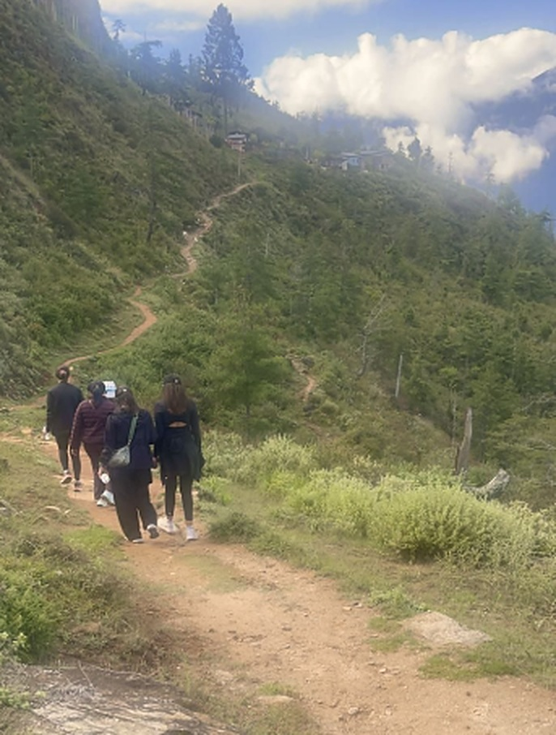
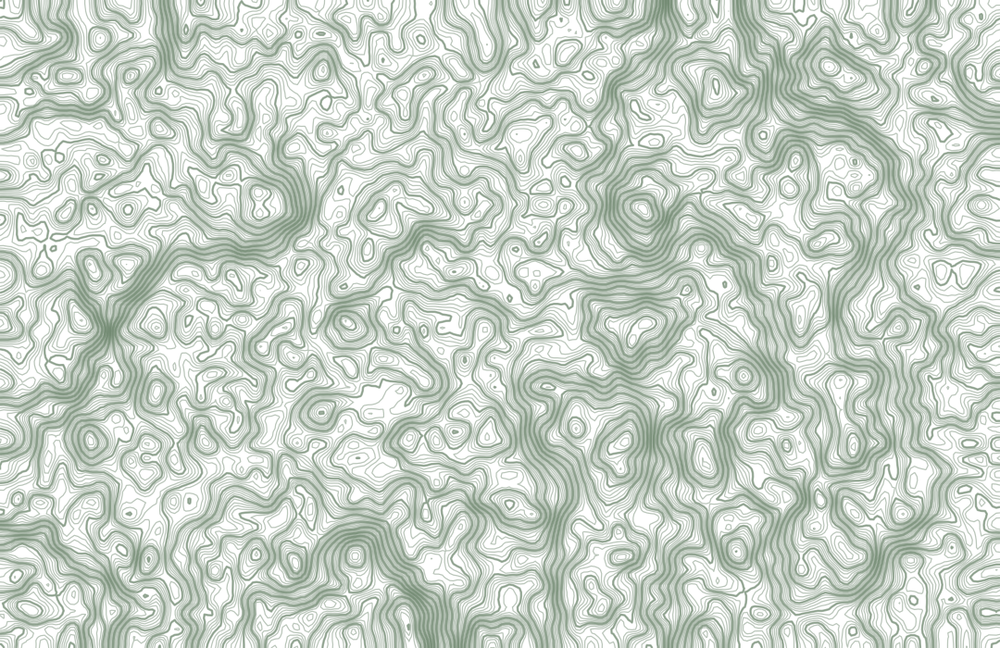

Sreepriya N S01 / 10
On deciding without perfect information

On the trail
We will rarely have 100% certainty.
Leadership still asks us to decide.
Sreepriya N S
Co-Founder & CEO, Entrust Family Office
Sreepriya N S02 / 10
“
Far better it is to dare mighty things… even though checkered by failure…
Theodore Roosevelt
“The Strenuous Life”, 1899
Sreepriya N S03 / 10
First, the wisdom
There is wisdom in thinking deeply.
Reading, researching, questioning assumptions and considering different possibilities.
Good leadership should never confuse speed with judgement.

Sreepriya N S04 / 10
But there comes a point
where more analysis does not create more clarity.
Instead, it tips into analysis paralysis.
More lines. Not more clarity.
Sreepriya N S05 / 10
What leadership is
Knowing when we have understood enough to make a responsible decision, and then having the courage to act.
Sreepriya N S06 / 10
Two temperaments
Some seek greater certainty
before moving forward.
Some take calculated risks,
acting with agility, learning from outcomes and course-correcting along the way.
Neither approach is inherently right or wrong.
Sreepriya N S07 / 10
The real strength
lies in finding the balance.
Enough
deliberation
to be responsible.
Enough
decisiveness
to not get stuck.
In the end, all the analysis and wisdom gathered along the way means little if it is never put into action.
Sreepriya N S08 / 10
In leadership, we will rarely have 100% information or 100% certainty.
What we need instead
The judgementto assess the risk
The convictionto make the decision
The humilityto acknowledge when we are wrong
The agilityto change course without losing momentum
Sreepriya N S09 / 10
That is the discipline
Thinking deeply
Deciding thoughtfully
Acting courageously
Learning quickly
Adapting continuously
Sreepriya N S10 / 10
What leadership asks for
The judgement and the courage to keep deciding and keep moving forward, without waiting for perfect information.
Savefor the next decision you are sitting on
Sendto someone still waiting for perfect information
Sreepriya N S
Co-Founder & CEO, Entrust Family Office
www.entrustfamilyoffice.com